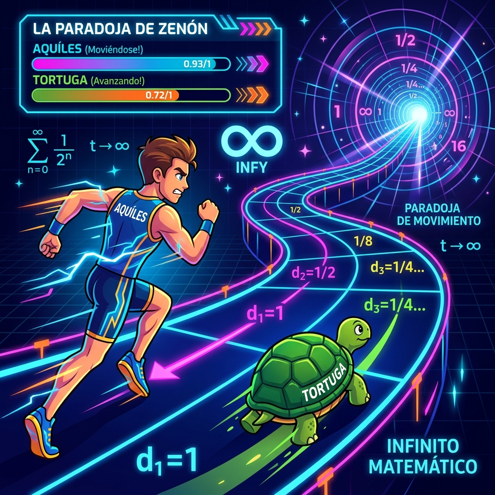
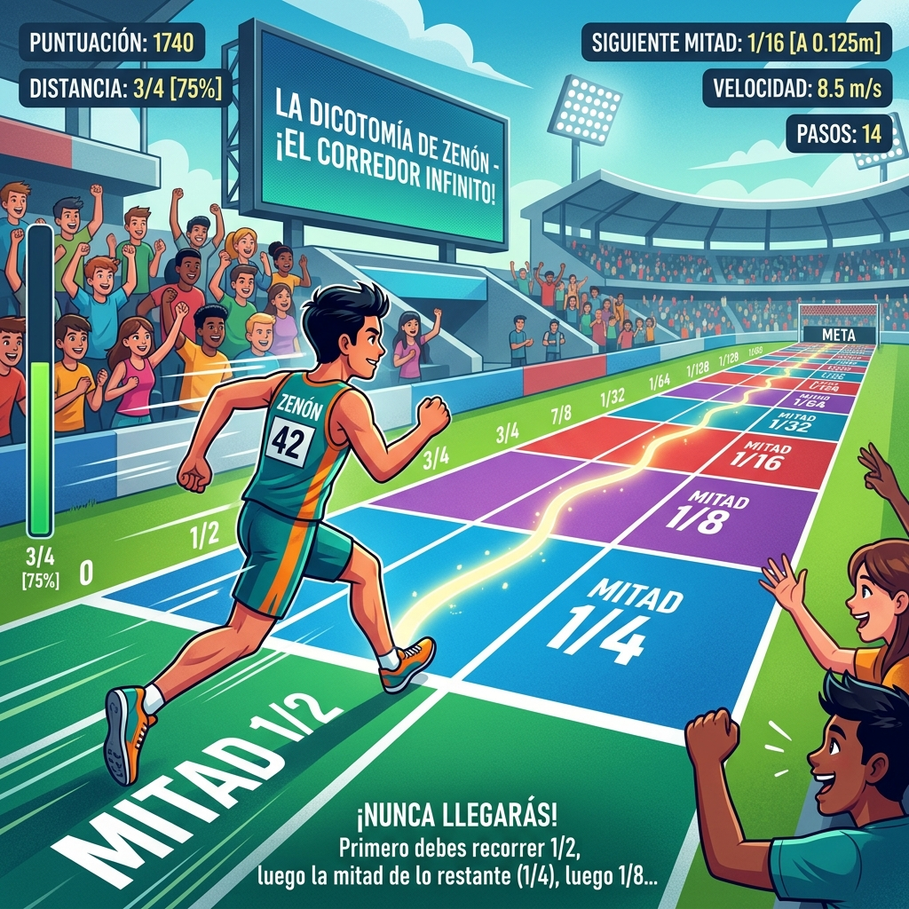
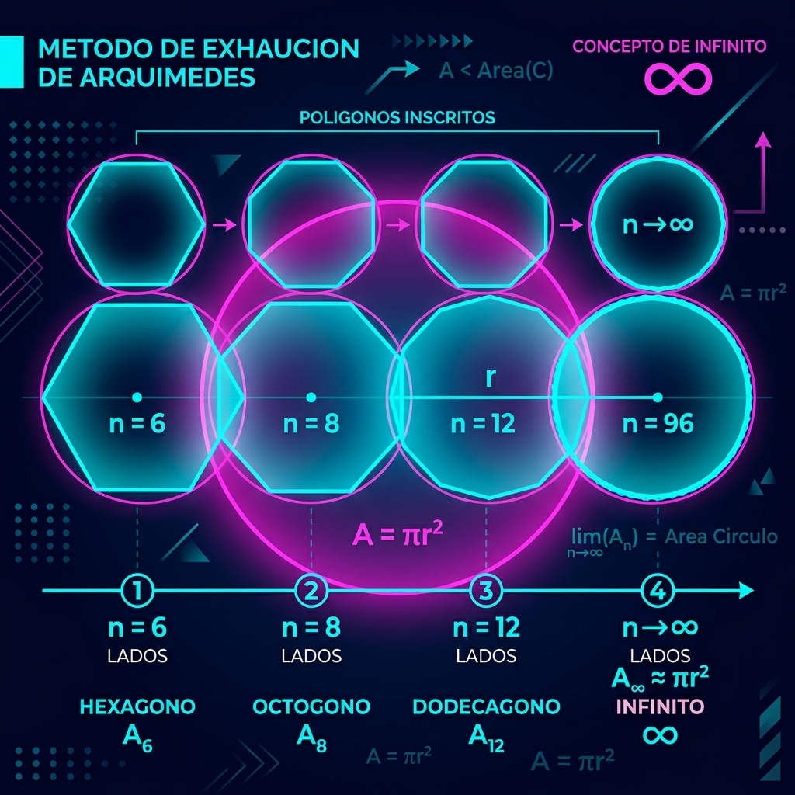

¿Es posible el movimiento? La paradoja de Zenón y el infinito
Guiar a los estudiantes para que analicen fenómenos donde el cambio es central, comprendiendo el origen del pensamiento variacional mediante el análisis intuitivo del movimiento, el espacio y la noción de límite histórico.
Enunciado Literal: "El movimiento es una ilusión. Para que un móvil llegue a su destino, primero debe alcanzar la mitad de la distancia que lo separa del mismo, luego la mitad de la mitad restante, y así infinitamente. Dado que una distancia finita se puede dividir infinitamente en mitades, es imposible que se complete el recorrido."
Esta paradoja filosófica obligó a la ciencia y las matemáticas a replantearse la naturaleza del espacio, el tiempo y el infinito. Siglos después, el Cálculo demostró que, aunque las divisiones sean infinitas, la suma de ellas converge a un valor finito (el Límite), explicando matemáticamente que el movimiento sí es posible.



Uso de un simulador visual interactivo para experimentar heurísticamente la división infinita del espacio.
Distancia restante: 100%